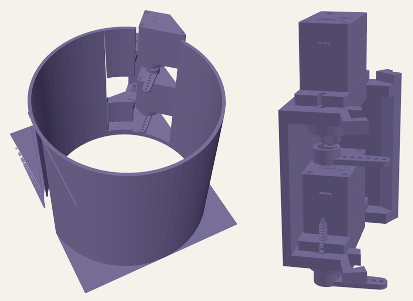
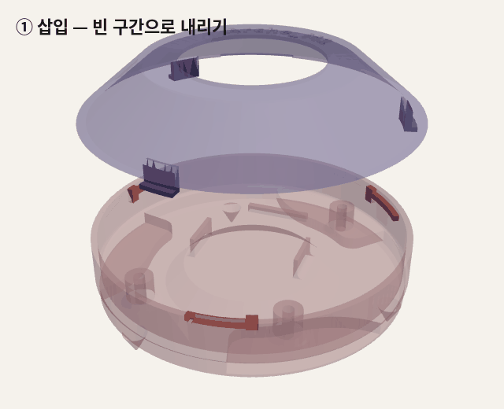
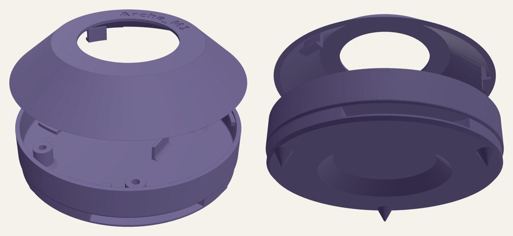

2026 대한민국 우주로버 챌린지
위치 기준점을 직접 설치하는 탐사 로버 — 앵커 투하 메커니즘과 앵커 하우징 설계
Overview
기간2026.07 ~ 2026.10
분류대회
주관우주항공청(KASA)
팀아르케 엠원(Arche_M1) · 지도교수 1명, 학부생 5명
성과23개 팀 중 본선 8팀 진출 · 🏆 임무 부문 우수상 · 경상남도지사상
역할앵커 투하 메커니즘 설계·제작, 앵커 하우징(바요넷) 모델링, 로버 차체 설계·제작(휠 제외)
로버가 주행하면서 UWB 앵커를 지형에 직접 내려놓고, 그 앵커들을 기준점 삼아 IMU와 함께 3차원 위치를 추정하는 시스템입니다. 위치 추정은 팀 작업이고(시뮬레이션 기준 오차 2~7 cm), 이 페이지에는 제가 맡은 앵커 투하 메커니즘과 앵커 하우징을 정리했습니다.
01 · Anchor Drop Mechanism

구조 — 튜브 2개 × 2단 서보 걸쇠
- 로버 위 프레임(146 × 280 mm)에 Ø80 mm 앵커 튜브 2개를 세우고, 튜브마다 앵커를 2개씩 세로로 적재합니다. 총 4개 = 위치 추정에 필요한 3개 + 예비 1개.
- 튜브 옆에는 서보 2개가 위아래로 겹쳐 있고, 서보 혼이 튜브 옆면 창으로 들어가 각 앵커의 바닥을 받칩니다. 두 혼의 높이 차(약 37 mm)는 앵커 한 개 높이에 맞췄습니다.
동작 — 순차 투하
- 첫 목표 지점: 아래 서보가 90° 회전해 혼을 빼면 아래 앵커가 중력으로 낙하합니다. 이 서보는 열린 채로 유지합니다.
- 다음 목표 지점: 위 서보도 90° 열면, 위 앵커가 비어 있는 아래 칸을 지나 그대로 떨어집니다.
- 튜브 2개로 앵커 4개를 지점마다 하나씩 내려놓을 수 있습니다.
설계 핵심
- 앵커 1개 = 서보 1개 — 앵커마다 걸쇠를 따로 둬서 투하 순서를 소프트웨어로 정하고, 서보 하나가 고장 나도 나머지는 동작하게 했습니다.
- 열린 걸쇠가 통로를 막지 않게 — 혼이 90° 돌면 튜브 밖으로 완전히 빠지도록 배치해, 아래 서보가 열린 채로도 위 앵커가 그대로 통과합니다.
- 걸쇠 간격 = 앵커 높이 — 위아래 혼 높이 차(약 37 mm)를 앵커 한 개 높이에 맞춰 적재 시 흔들림을 줄였습니다.
- 걸리지 않고 떨어지는 간극 — 튜브 Ø80 mm, 앵커 Ø78 mm로 반경 1 mm 여유를 둬서 낙하 중 벽에 끼지 않게 했습니다.
- 기울어짐 대응 — 한쪽에서만 받치는 구조라 서보 혼을 15 mm 연장했습니다(연장부 3D 프린팅 후 열융착). 받침점이 튜브 중심 쪽으로 약 32 → 17 mm 들어와 기울어짐 모멘트가 약 절반으로 줄었습니다.
- 토크 여유 — 앵커 53 g 기준 SG90 토크 여유는 정지 시 약 10배, 3g 충격에서도 약 3.4배입니다.
- 단순함 — 스프링·래치 없이 서보 회전과 중력만 사용하고, 프레임과 걸쇠는 모두 3D 프린팅으로 만들어 빠르게 수정·재출력했습니다.
02 · Small-Angle Bayonet Housing
앵커(UWB 비콘) 하우징의 뚜껑을 약 20°만 돌려서 잠그는 소각도 바요넷으로 설계했습니다. 흔한 90° 쿼터턴 대신 짧은 회전으로 잠기게 해서, 현장에서 빠르게 열고 닫을 수 있습니다.


설계 핵심
- 배터리 교체·점검이 쉽게 — 나사·공구 없이 약 20°만 돌리면 열고 닫힙니다.
- 달 지형의 모래·먼지 차단 — 뚜껑이 하우징 윗면 전체를 덮어 내부 UWB 모듈과 배터리를 보호합니다.
- 투하 충격에도 안 열리게 — 축 방향은 걸림턱이 막고 있어, 로버에서 떨어져 착지해도 뚜껑이 빠지지 않습니다.
- 착지 후 제자리 고정 — 하우징 바닥의 원뿔 스파이크 3개가 지면에 박혀, 투하된 앵커가 미끄러지거나 구르지 않습니다. 위치 추정의 기준점이 움직이지 않게 하기 위해서입니다.
- 고르게 잠기게 — 러그 3개를 120° 간격으로 배치해 둘레 세 곳에서 균등하게 눌러, 뚜껑이 기울지 않습니다.
- 과회전 방지 — 회전 끝에 Stopper를 둬서 항상 같은 위치에서 멈춥니다.
- 3D 프린팅 공차 반영 — 러그 발 끝과 홈 사이에 반경 0.3 mm 여유를 둬서, 출력 오차가 있어도 끼지 않고 돌아갑니다.
- 투하 튜브에 맞춘 외경 — 앵커 Ø78 mm, 튜브 Ø80 mm.
- 신호 간섭 최소화 — UWB 안테나 주변에 금속 부품을 두지 않았습니다.
03 · Tools
Fusion 3603D PrintingServo ActuationUWB
← 프로젝트 목록